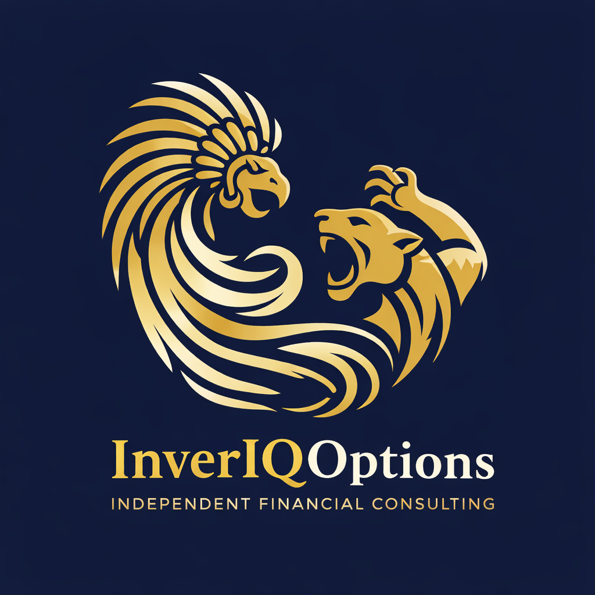

Inteligencia para decisiones estratégicas
Firma mexicana con visión global, enfocada en consultoría, estructura operativa y claridad financiera para decisiones con mayor control, disciplina y ejecución.
InverIQ Options nace con la idea de combinar visión estratégica, orden operativo y disciplina de ejecución. Buscamos construir una firma con identidad mexicana, estándar institucional y enfoque de largo plazo.
Nuestro punto de partida es la consultoría aplicada: resolver, ordenar, documentar y dar visibilidad. A partir de ahí, evolucionar con bases más sólidas.
Ayudar a personas y empresas a tomar mejores decisiones mediante consultoría, administración operativa y estructura financiera clara.
Evolucionar desde una consultora mexicana de alto nivel hacia una plataforma institucional de mayor alcance, construida por etapas, con disciplina, credibilidad y enfoque estratégico.
Primera etapa del sitio en construcción. Próximamente integraremos agenda, propuesta comercial y canales de contacto.
Agenda diagnóstico